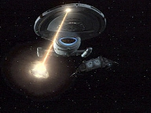
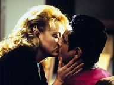
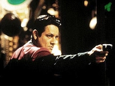
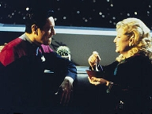
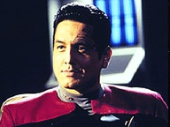

| MANCHETE
DO EPISDIO
Chakotay
se apaixona por aliengena misteriosa
Episdio
anterior | Prximo episdio Sinopse:
Data Estelar: 51813.4  Uma
nave camuflada aparece na trilha da Voyager com uma mulher ferida a bordo que
abre contato, chamando especificamente por Chakotay. Na Enfermaria, a moa,
Kellin, pede asilo capit. Quando Chakotay lhe pergunta como o conhece, a
visitante afirma que, recentemente, esteve na Voyager, onde passou vrias
semanas. Ningum se lembra dela porque as memrias de seu povo no ficam
presentes nas mentes de outras espcies por mais do que algumas horas. Isso se
deve a um feromnio produzido pela raa, que bloqueia os engramas de memria
a longo prazo. Tudo muito surpreendente, mas o comandante fica ainda mais
perplexo quando ela diz que voltou para a Voyager porque se apaixonou por ele.
Chakotay informa o resto dos oficiais superiores que Kellin
de Ramura, uma sociedade fechada que persegue cidados que tentam deixar o
planeta. Ela esteve na nave um ms antes, justamente para capturar uma dessas
pessoas. Embora a visitante afirme que as evidncias de sua presena foram
apagadas por um vrus nos computadores, a tripulao recebe ordens de
examinar os registros de navegao e outros meios que corroborem sua
histria.
 Enquanto Kellin relembra Chakotay de como se apaixonaram,
os Ramura abrem fogo contra a Voyager. Janeway permite que a aliengena
modifique os sensores para detectar as naves camufladas. Quando a Voyager
dispra, os inimigos vo embora. Kellin informa que deseja ficar
permanentemente na nave. Apesar de Chakotay no se lembrar de t-la amado,
fica intrigado com a histria do relacionamento. A visitante sabe que seu povo
retornar e que a tripulao estar em perigo, por isso diz ao comandante
que ir embora se ele no retornar os sentimentos. Ele pede que a moam
fique.
Ao conversar sobre sua ltima noite juntos, Kellin explica
como Chakotay a ajudou a encontrar o fugitivo. Eles usaram um varredor
magntico para desativar a camuflagem e, ento, Kellin apagou suas memrias
do mundo externo com um emissor neuroltico. Mais tarde, enquanto trabalha com
Seven e Harry em uma estratgia de defesa contra seu povo, Kellin sente que um
agente est a bordo. Ele se materializa de repente e, apesar de seu protesto,
dispra contra ela o mesmo emissor neuroltico.
 medida que as memrias de Kellin comeam a
desaparecer, ela implora a Chakotay que no esquea do amor que dividiram. Em
pouco tempo, porm, ela no o reconhece mais. O comandante lhe conta sobre o
relacionamento e pergunta se h alguma forma de recuperar aqueles sentimentos.
A visitante se recusa a violar as leis de seu povo e vai embora com o agente.
Por fim, Chakotay escreve sobre ela em seu dirio pessoal, para garantir que
nunca a esquecer.
Comentrios:
Assim como "Vis
Vis", "Unforgettable" tenta fazer o impossvel.
Trazer do ostracismo um personagem h anos abandonado e, de sbito,
"tirar o atraso". A ironia: apesar do ttulo, de inesquecvel o
segmento no tem nada. Pelo contrrio. Rene tudo de mais descartvel em Voyager:
romance, Chakotay, tecnobaboseira. Pssima qumica. O relacionamento entre o
comandante e Kellin simplesmente no cola. No parece haver qualquer
conexo entre os dois. Difcil acreditar que em questo de dias o recatado
primeiro-oficial se entregaria a uma paixo daquela.
O telespectador tem que se contentar com o esclarecimento que
o sbio Neelix fornece ao fim da histria: o amor inexplicvel e
imprevisvel. S assim para (tentar) entender a forma como Chakotay passa da
indiferena premeditada ao amor a Kellin. Tudo isso, para depois sentir-se
devastado - sensao que em nada pesar, pois tudo acabar como se no
tivesse acontecido.
 O romance furado se funde a uma histria repleta de
besteiris da fico-cientfica. Kellin vem de uma raa que emite um
feromnio que faz com que os demais se esqueam deles. Para ajudar, a
sociedade da visitante vive na escurido. No saem de casa, no se
relacionam com outros (que conveniente!) e no permitem tambm que saiam.
Do-se ao trabalho de nomear agentes para trazer os "fugitivos" de
volta. Alis, nova ironia: a espcie devota ao isolamento desenvolveu -
sabe-se l por qu - tecnologia de viagem espacial e ela bastante
avanada.
Kellin uma incgnita. Sendo ela prpria uma agente,
o que a fez querer deixar de vez o sistema? Foi antes ou depois de ter
capturado um patrcio na Voyager com a ajuda de Chakotay? O roteiro no
fornece a resposta. No se sabe se ela enfrentava um dilema anterior que a
fez tomar a deciso. Mas, se for o caso, como explicar seu profissionalismo
notvel na caa ao fugitivo? Se no foi, por que matou o agente que passou
a persegui-la? Nada consistente ou plausvel.
 Quando Chakotay e Kellin se apaixonam, claro que um
agente (chamado Curneth) aparece na Voyager para lev-la de volta. Ele
dispara uma uma que apaga as memrias da moa no relacionadas prpria
cultura (uma faanha!) e depois jogado na cela. O comandante tenta
convencer a agora desmemoriada visitante que os dois se amam e que ela pode
ficar na nave. bvio que no consegue. Falta de charme? No, que,
alm do furo no roteiro, a lei primordial em Voyager que tais
romances se encerrem em 45 minutos. O consolo de Chakotay - e de todos os
telespectadores - que tudo estar esquecido no episdio seguinte.
Citaes:
Paris - "So, you're going to realign
your sensors with Seven's. Sounds like fun."
("Ento, voc vai realinhar seus sensores com os de Seven. Parece
divertido.")
Kim - "Very funny."
("Muito engraado.")
Chakotay - "I thought you might like to get something
to eat unless your memories of our mess hall aren't good."
("Pensei que voc gostaria de comer algo, a no ser que suas lembranas
do refeitrio no sejam boas.")
Kellin - "As a matter of fact, I was quite fond of Neelix's food."
("Na verdade, eu gostava muito da comida do Neelix.")
Chakotay - "Now that's something that's hard to believe."
("Isso algo difcil de acreditar.")
Chakotay - "If Kellin's going to be
with us, the Captain wants her to serve a function, to contribute in some way."
("Se Kellin vai ficar conosco, a capit quer que ela sirva alguma
funo, que contribua de algum modo.")
Tuvok - "A reasonable expectation. What are her skills?"
("Uma expectativa razovel. Quais so as habilidades dela?")
Chakotay - "Basically, she was a security operative for her people.
She's a trained expert in weaponry, surveillance, fighting, skills. Any idea
where she might fit in?"
("Basicamente, ela foi uma agente de segurana para seu povo.
especialista treinada com habilidades em armamentos, vigilncia, luta. Alguma
idia de onde ela pode se encaixar?")
Tuvok - "Mr. Neelix could use an assistant in the mess hall."
("O Sr. Neelix precisa de ajuda no refeitrio.")
Chakotay - "Tuvok, that was a joke. Don't deny it. You were trying to
be funny."
("Tuvok, isso foi uma piada. No negue. Estava tentando ser engraado.")
Tuvok - "If you choose to interpret my remark as humorous, that is
your decision."
("Se prefere interpretar meu comentrio como humorstico deciso sua.")
Chakotay - "I do, and it was."
("Prefiro, e ele foi.")
Tuvok - "It's perfectly logical. All the qualities you mentioned would
help in defending Neelix against the periodic wrath of the crew."
(" perfeitamente lgico. Todas as qualidades que mencionou ajudariam a
defender Neelix contra a ira peridica da tripulao.")
Neelix - "Commander, I don't think you
can analyse love. It's the greatest mystery of all. No one knows why it
happens or doesn't. Love is a chance combination of elements. Any one thing
might be enough to keep it from igniting. A mood, a glance, a remark. And if
we could define love, predict it, it would probably lose its power."
("Comandante, no acho que pode analisar o amor. o maior mistrio de
todos. Ningum sabe por que ele acontece, ou por que no. Amor uma
combinao de elementos. Qualquer coisinha pode impedi-lo de acender. Um
humor, uma olhadela, um comentrio. E se pudssemos definir amor, prev-lo,
provavelmente ele perderia o seu poder.")
Trivia:
 O diretor, Andrew Robinson, mais conhecido pelos fs como o Cardassiano
Garak, de Deep Space Nine.
O diretor, Andrew Robinson, mais conhecido pelos fs como o Cardassiano
Garak, de Deep Space Nine.
Michael Canavan fez Tamal, em "Defiant",
de Deep Space Nine, e um conselheiro Vulcano em
"First Flight", de Enterprise.
Ficha
tcnica:
Direo de
Andrew J. Robinson
Adaptao por Greg Elliot e Michael
Perricone
Exibido em 22/04/1998
Produo: 090 Elenco: Kate
Mulgrew como Kathryn Janeway
Robert Beltran como
Chakotay
Roxann Biggs-Dawson como B'Elanna Torres
Robert
Duncan McNeill como Tom Paris
Ethan Phillips como
Neelix
Robert Picardo como Doutor
Tim Russ
como Tuvok
Jeri Ryan como Seven of Nine
Garrett Wang como Harry Kim Elenco
convidado:
Virginia Madsen como Kellin (Rumaran)
Michael Canavan como Curneth
Episdio
anterior | Prximo episdio
|